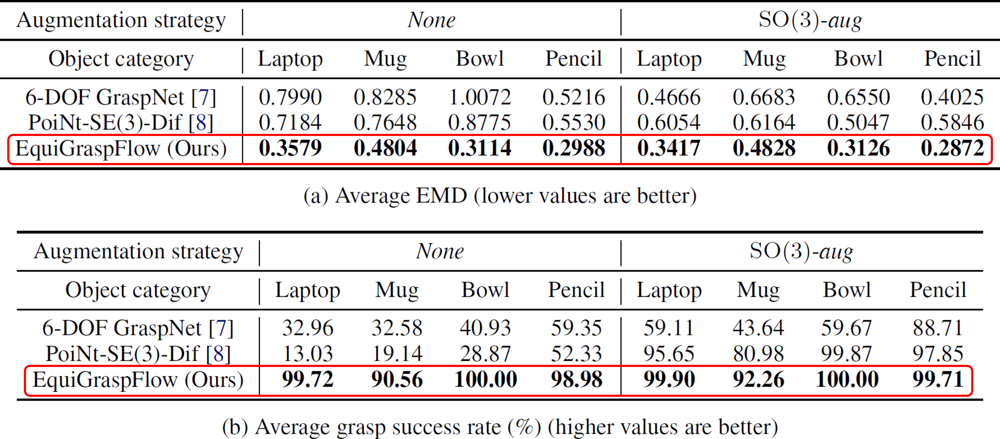
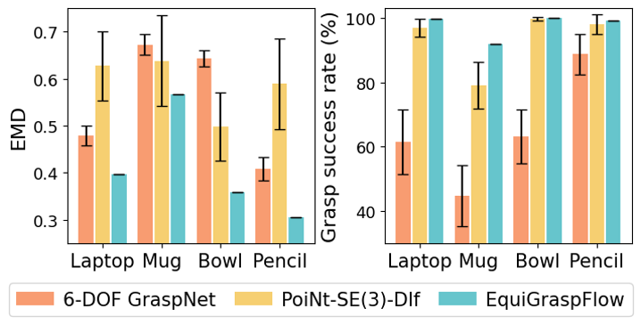
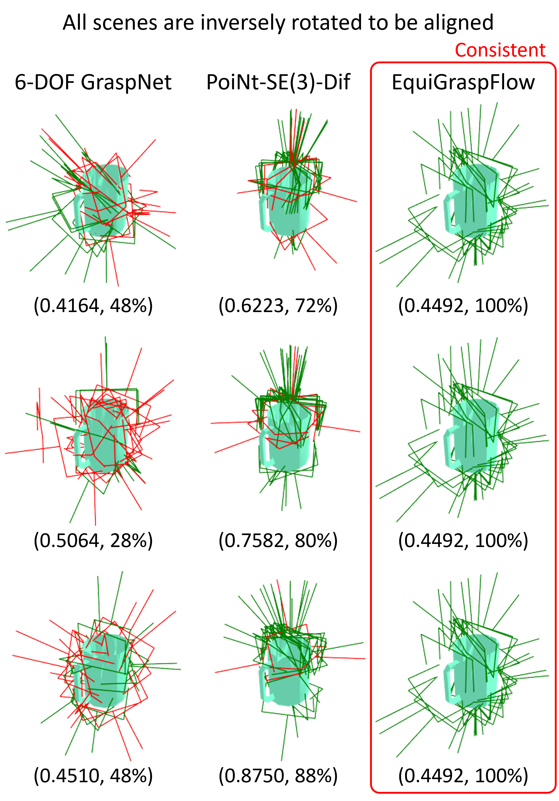
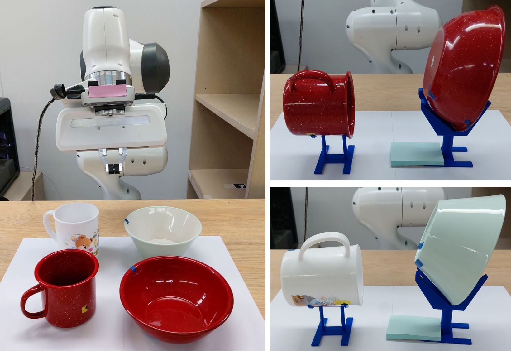
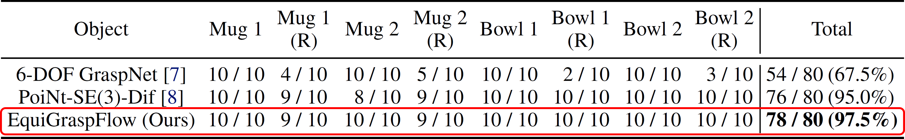

SE(3)-Equivariant Grasp Pose Generation
Recently, generative model-based approaches for 6-DoF grasping, such as 6-DOF GraspNet [1] and SE(3)-DiffusionFields [2], have been introduced. However, the primary flaw with these existing grasp pose generative models is that they do not produce consistent grasp poses for rotated objects, leading to significant failure in some cases. An ideal model should generate grasp poses that transform identically for rotated and translated objects. Such models are considered SE(3)-equivariant.

In this paper, we propose an SE(3)-equivariant 6-DoF grasp pose generative model that produces consistent grasp poses for rotated and translated objects. Denoting an object's point cloud by \( \mathcal{P} \) and a grasp pose \( T \in \mathrm{SE}(3) \), a grasp pose generative model is represented by \( p(T | \mathcal{P}) \). With \( T' \mathcal{P} \) denoting 3D transformation of the points in the point cloud \( \mathcal{P} \) by a transformation \( T' \), the SE(3)-equivariance of the grasp pose generative model is formulated as follows: For a transformed point cloud, equivalently transformed grasp poses should have same likelihood.
Therefore, the required condition for SE(3)-equivariant grasp pose generation is that the generative model should learn SE(3)-invariant conditional distributions described as follows:
Conditional Continuous Normalizing Flows as Generative Model
The conditional Continuous Normalizing Flows (CNFs) models a target conditional distribution \( q(T | \mathcal{P}) \) by transforming a prior conditional distribution \( p_0(T | \mathcal{P}) \) using the time-dependent conditional angular and linear velocity fields \( \omega_\theta(t, \mathcal{P}, T) \) and \( v_\phi(t, \mathcal{P}, T) \) where \( \theta \) and \( v \) are trainable parameters. Denoting the transformed distribution at time \( t \) by \( p_t(T | \mathcal{P}) \), we train \( \omega_\theta \) and \( v_\phi \) so that \( p_1(T | \mathcal{P}) \) closely approximates \( q(T | \mathcal{P}) \).
Generation process of \( T_\tau \sim p_\tau(T | \mathcal{P}) \) is as follows:
- Initial samples \( T_0 \sim p_o(T | \mathcal{P}) \).
- Transform the initial samples along the flow of the velocity fields \( \omega_\theta, v_\phi \) over \( t \in [0, \tau] \).
where \( [a] \) is an operation that maps a 3D vector \( a \) to a skew-symmetric matrix defined as \( [a]_{12} = -a_3, [a]_{13} = a_2, [a]_{23} = -a_1 \). The following figure depicts a flow constructed from the velocity fields and ODEs.
EquiGraspFlow: SE(3)-Equivariant 6-DoF Grasp Pose Generative Flows
Contribution 1: Framework to learn SE(3)-invariant conditional distributions
We demonstrate that starting from an SE(3)-invariant prior conditional distribution, SE(3)-equivariant conditional velocity fields preserve the invariance of transformed conditional distributions over time.
We utilize a prior conditional distribution \( p_0(T | \mathcal{P}) = p_0(R) p_0(x | \mathcal{P}) \) where \( p_0(R) \) is uniform over SO(3) and \( p_0(x | \mathcal{P}) \) is Gaussian in \( \mathbb{R}^3 \) with its mean located at the center of the point cloud \( \mathcal{P} \). It is trivial to show that this prior conditional distribution is SE(3)-invariant. The SE(3)-equivariance of the conditional velocity fields is decomposed into the equivariances on \( \mathbb{R}^3 \) and SO(3). The \( \mathbb{R}^3 \)-equivariance is achieved by subtracting the point mean from \( \mathcal{P} \) and \( x \). The SO(3)-equivariance is achieved by adopting the Vector Neuron (VN) architectures [3], which are designed to be SO(3)-equivariant. The structure of the velocity fields is depicted in the following figure.
Contribution 2: Equivariant lifting layer that converts scalars into 3D equivariant vectors
However, directly using the VN architectures is not straightforward since they require lists of 3D vectors as input, while time \( t \) is a scalar. Thus, we propose an equivariant lifting layer that converts any scalar variables into 3D equivariant vectors, so that the lifted time can be input into VNs while preserving equivariance.
The structure of the equivariant lifting layer is depicted in the above figure. The procedure of the lifting layer is as follows:
- VN-Linear produces an equivariant vector from representation \( z \) and pose \( T \).
- Scale the equivariant vector by time \( t \).
Experiments
Experiment Settings
We utilize a dataset obtained from the Laptop, Mug, Bowl, and Pencil categories of the ACRONYM dataset [4]. For the data augmentation of the training dataset, we construct two strategies: None denotes no augmentation, and SO(3)-aug denotes augmenting by random arbitrary rotation in SO(3). The evaluation metrics we utilize are Earth Mover's Distance (EMD) and grasp success rate. The EMD measures the distance between the distributions of the generated and ground-truth grasp poses, defined by the minimum geodesic distance on the SE(3) manifold required to align the samples. The grasp success rate is assessed by determining whether the Franka Panda gripper successfully holds the object following the grasping action. Both metrics are first averaged across the rotations for each object, and then averaged across all objects.
Simulation Experiment
Superior performance in learning accurate grasp pose distribution and grasp success

Consistent performance with respect to object rotations
Zero standard deviation with respect to object rotations

Identical metric values

Real-World Experiment
Seamless applicability to real-world tasks


Zero standard deviation with respect to object rotations
Identical metric values